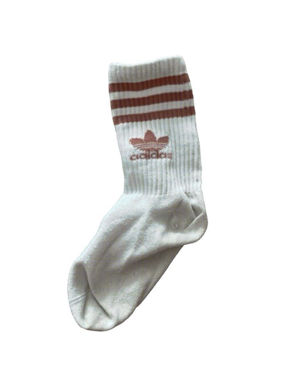

| Age | 12 |
| Status | Missing |
| Related to | None identified |
| Last Incident | The Great Laundry Storm |
Tom was a veteran formal dress cotton sock and the informal community mediator of the laundry basket in the months preceding the storm.
He spent the final two weeks of his life attempting to prevent the inter-faction conflict that many believe contributed to the disaster.
Tom had served in the household for twelve years and had developed an unusually diplomatic disposition.
He was one of the few socks trusted by both the sports faction and the formal wear community, and he leveraged that trust entirely in his push for the Cotton Accord.
The Cotton Accord, drafted by Tom in late February 1999, was a proposed framework for shared drawer access, pairing protocols, and mutual recognition between sock factions.
It was rejected on March 1st after Luna refused a key provision on wool shelving rights. Tom described the collapse as 'a tragedy that didn't have to happen.' He was right.
Multiple witnesses confirm Tom remained calm as the vortex opened — 'Old Man Cotton described him as the only one who wasn't screaming.'
Tom was conducting a headcount when the drum sealed. He had reached number eleven.
His formal cotton composition — structured and resistant to bunching — may have kept him stable longer than lighter socks.
It was not enough.
His formal cotton composition — structured and resistant to bunching — may have kept him stable longer than lighter socks.
It was not enough.